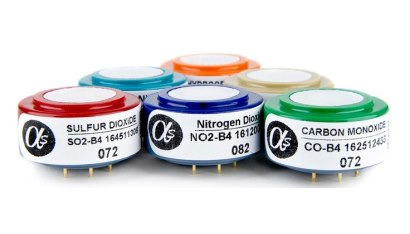

출처: HazardEx - 가스 센서 수명 이해 (hazardexonthenet.net)
가스 센서 수명 이해
2016년 11월 29일
이 기사에서는 Crowcon의 가스 검지 전문가 Andy Avenell이 전기 화학 및 펠리스터 독성 및 산소 가스 센서의 작동 수명에 영향을 미치는 요인에 대해 간략하게 설명합니다. 이러한 센서의 작동 방식, 정상적인 기대 수명에 대한 설명과 작동 수명을 단축시킬 수 있는 요인에 대한 검토가 제공됩니다. 센서 수명을 예측하고 교체 계획을 세우는 데 도움이 되는 제안도 제공됩니다.
소개
가스 감지기는 위험한 가스 및 그 영향으로부터 인력과 장비를 보호하기 위해 산업에서 광범위하게 사용됩니다. 휴대용 및 고정 소수점 가스 검지기 사용자는 작동 수명 동안 기기를 안전하게 작동하는 데 드는 잠재적으로 상당한 비용에 대해 잘 알고 있을 것입니다.
1부: 전기 화학 센서
작동 방식
이 소형 셀에는 수성 또는 겔 전해질(종종 황산: H2SO4)로 적신 전극이 포함되어 있습니다. 작업 전극은 촉매로 처리되어 대상 가스 (예 : 일산화탄소 : CO, 황화수소 : H2S 등)가 산화되거나 환원됨에 따라 작은 전류를 생성합니다. 센서는 필요한 스케일의 가스 농도를 표시하도록 설정된 증폭기에 연결됩니다.
전기 화학 센서는 주변 환경의 가스가 셀 표면의 구멍을 통해 들어가는 확산 모드에서 가장 자주 사용됩니다 (가스의 자연 이동성에 의해 구동됨). 일부 기기는 펌프를 통해 공기/가스 샘플을 센서에 공급합니다. PTFE 멤브레인은 물이나 오일이 셀에 들어가는 것을 방지하기 위해 구멍 위에 장착됩니다. 센서 범위와 감도는 다양한 크기의 구멍을 사용하여 설계에 따라 달라질 수 있습니다. 구멍이 클수록 감도와 분해능이 높아지는 반면, 작은 구멍은 감도와 분해능을 감소시키지만 범위는 늘어납니다.
갈바닉 산소 센서는 전기 화학 산소 센서에 대해 설명 된 것과 유사한 원리를 사용하여 작동하지만 수명은 예측 가능하며 교체 기간은 미리 정의되어 있습니다 (일반적으로 2 년 또는 3 년). 대부분의 독성 가스 센서와 달리 산소 센서는 대상 가스에 지속적으로 노출됩니다. 정상적인 산소 고갈 모니터링 애플리케이션에서 센서는 20.9% 부피의 산소에 노출되며, 이는 반응에 의해 점차적으로 소비되는 납 양극에서 갈바닉 반응을 일으킵니다. 따라서 산소에 반응하여 전류를 계속 생성하는 센서의 능력은 전해질에 사용할 수 있는 납 함량에 의해 제한됩니다.
가스 검지 기기 제조업체는 센서 성능에 온도 보상이라는 중요한 구성 요소를 추가합니다. 가스에 대한 민감도(및 제로 베이스라인 신호)는 종종 온도에 따라 변하므로 주변 온도가 변함에 따라 비선형 가스 응답이 발생합니다. 
가스 감지기를 개발하는 동안 센서 최소값과 최대 (일반적으로 -30 ° C에서 + 50 ° C) 사이의 온도 증분으로 동일한 유형의 여러 센서에 여러 가스 농도를 적용하여 많은 시간이 걸립니다. 수집된 데이터는 평균을 구하여 가스 감지기에 사용되는 온도 보상 알고리즘을 생성하여 센서 판독값이 전체 작동 범위에서 일관되도록 합니다.
센서 수명에 영향을 미치는 요인
극한 온도는 센서 수명에 영향을 줄 수 있습니다. 제조업체는 기기의 작동 온도 범위(일반적으로 -30°C에서 +50°C)를 명시합니다. 그러나 고품질 센서는 이러한 한계를 넘어 일시적인 일탈을 견딜 수 있습니다. H2S 또는 CO 센서(예: 60-65°C)에 대한 단기간(1-2시간) 노출은 허용되지만 반복적인 사고로 인해 전해질이 증발하고 기준선(영) 판독값이 이동하고 응답이 느려질 수 있습니다.
감도는 저온에서 손실됩니다. 센서는 -40°C까지 작동할 수 있지만 가스에 대한 민감도가 훨씬 낮아지고(감도가 최대 80%까지 감소할 수 있음) 응답하는 데 훨씬 더 오래 걸립니다. 전해질이 -35°C 이하로 얼 위험도 있습니다.
매우 높은 가스 농도에 노출되면 센서 성능이 저하될 수도 있습니다.
전기화학 센서는 일반적으로 설계 한계의 최대 10배에 노출되어 테스트됩니다. 고품질 촉매 재료를 사용하여 구성된 센서는 화학적 변화나 장기적인 성능 손실 없이 이러한 노출을 견딜 수 있어야 합니다. 촉매 로딩이 낮은 센서는 손상을 입을 수 있습니다.
센서 수명에 가장 큰 영향을 미치는 것은 습도입니다. 전기화학 센서의 이상적인 환경 조건은 섭씨 20°C 및 60%RH(상대 습도)입니다. 주변 습도가 60%RH 이상으로 증가하면 물이 전해질에 흡수되어 희석됩니다. 극단적인 경우 액체 함량이 2-3배 증가하여 잠재적으로 센서 본체에서 누출된 다음 핀을 통해 누출될 수 있습니다. 60%RH 미만에서는 전해질의 물이 탈수되기 시작합니다. 반응 시간은 전해질이 탈수됨에 따라 상당히 연장될 수 있다.
전해질의 흡수 또는 희석을 테스트하는 빠르고 간단한 방법은 센서의 무게를 측정하는 것입니다. 원래 무게의 +/- 250mg의 변화는 누출 또는 성능 변화가 가능함을 나타냅니다. 전해질 희석 및 증발은 센서가 반대 극단의 습도 수준에 노출되는 경우 되돌릴 수 있습니다. 센서는 5-25일 이내에 원래 무게와 전해질 농도로 돌아갈 수 있으며 성능이 복원됩니다.
센서 감도는 주변 환경에 맞게 조정될 수 있습니다: 응답이 낮거나 응답 시간이 길어지는 센서는 주변 습도가 변함에 따라 개선될 수 있으며, 이는 계절 변화가 큰 국가에서는 시기에 따라 달라질 수도 있습니다. 특히 황화수소 센서 성능은 주변 조건에 따라 달라집니다. 고정 소수점 검출기에서 센서의 감도와 응답 시간은 시운전 후 처음 2-3주 동안 현지 온도 및 습도에 따라 안정화되므로 변경될 수 있습니다. 이 효과는 설치 전에 센서가 매우 건조한 환경(예: 에어컨이 설치된 사무실)에 보관된 경우 특히 널리 퍼집니다.
센서 전극은 비정상적인 조건에서 촉매에 흡착되거나 촉매와 반응하여 촉매를 억제하는 부산물을 생성하는 간섭 가스에 의해 중독될 수 있습니다.
극심한 진동과 기계적 충격은 백금 전극을 결합하는 용접부를 파쇄하고 스트립(또는 일부 센서의 와이어)과 핀을 함께 연결하여 센서를 손상시킬 수도 있습니다. 그러나 이것은 잘 구성된 센서의 경우 드문 경우입니다.
정상적인 기대 수명
일산화탄소 또는 황화수소와 같은 일반적인 가스용 전기화학 센서의 작동 수명은 일반적으로 2-3년입니다. 불화 수소와 같은 더 이국적인 가스 센서는 수명이 12-18 개월에 불과할 수 있습니다.
이상적인 조건, 20°C 및 60%RH 영역의 안정적인 온도 및 습도에서 오염 물질 발생 없이 전기화학 센서는 11년 이상 작동하는 것으로 알려져 있습니다! 목표 가스에 주기적으로 노출되어도 이러한 소형 연료 전지의 수명이 제한되는 것은 아닙니다: 고품질 센서에는 반응에 의해 고갈되지 않는 많은 양의 촉매 물질과 견고한 도체가 있습니다.
인용된 센서 ‘보관 수명’ 또는 ‘보관 수명’은 사용자, 서비스 회사 및 제조업체 모두에게 혼란과 좌절을 초래할 수 있습니다. 전기화학 센서의 보관 수명은 일반적으로 제조 후 6개월입니다(20°C의 이상적인 조건에서 보관하는 경우). 이 기간이 지나면 출력 신호가 드리프트되기 시작할 수 있습니다. 필연적으로이 기간의 작은 부분은 기기 또는 센서 모듈의 제조 및 고객에게 배송하는 데 소비됩니다. 따라서 예비 센서를 사용하는 데 과도한 지연이 없도록 신중하게 구입을 계획하는 것이 중요합니다.
필터링된 센서
화학 필터는 간섭 가스, 특히 황화수소의 영향을 제한하기 위해 일부 센서에 사용됩니다. 이러한 필터는 일반적으로 간섭 가스에 대한 내성을 나타 내기 위해 ppm / 시간으로 정의 된 제한된 수명을 갖습니다. ppm/시간 메트릭은 다양한 가스 농도에 따라 정확하지 않을 수 있습니다. 명시된 용량이 1000ppm/시간인 필터는 가스 노출의 절반으로 반드시 두 배 더 오래 지속되는 것은 아닙니다.
간섭 가스(예: 황화수소, H2S 또는 이산화황, SO2, 센서)에 대한 센서 교차 반응은 필터가 포화됨에 따라 증가합니다. 물론 사용자는 센서가 SO2 또는 H2S에 응답하는지 확인할 수 없습니다.
유기(탄소 기반) 필터는 효과적이지만 재생되지 않으며 주변 습도가 50%RH를 초과하여 기공이 막히면 포화될 수 있습니다. 화학 필터의 효율은 습도가 높은 환경에서 감소할 수 있습니다.
센서가 고장났는지 어떻게 알 수 있습니까?
지난 수십 년 동안 전기 화학 센서가 고장 났을 때를 결정할 수 있다고 주장하는 가스 감지기에 적용된 여러 특허와 기술이 있습니다. 그러나 이들 중 대부분은 센서가 어떤 형태의 전극 자극을 통해 작동하고 있다고 추론 할 뿐이며 잘못된 보안 감각을 제공 할 수 있습니다. 센서가 작동하고 있음을 입증하는 유일한 확실한 방법은 테스트 가스를 적용하고 응답을 측정하는 것입니다 : 범프 테스트 또는 전체 보정.
그러나 계측기는 센서 성능에 영향을 미칠 수 있는 사고를 보고할 수 있습니다: 지능형 가스 감지기 및 트랜스미터는 주변 환경을 모니터링하고 온도가 센서의 상한 또는 하한 임계값을 초과하는 경우 경고를 생성할 수 있습니다. 트랜스미터는 또한 측정된 가스 레벨을 특정 센서의 최대 허용 한계와 비교하고 이를 초과하면 경고할 수 있습니다. 이 예에서 올바른 작업은 사용자가 테스트 가스를 사용하여 센서를 범프 테스트하여 올바르게 응답하는지 확인하는 것입니다.
가스 센서 교체 계획
센서 수명 예측은 기기 작업자가 센서 교체를 계획할 수 있도록 하고 서비스 엔지니어가 이미 교체 센서를 들고 현장에 출석하여 기기 가동 중지 시간 또는 재방문의 위험을 방지하는 데 매우 바람직합니다. 반대로, 사용자는 일상적인 센서 교체 사이의 기간을 자신 있게 연장할 수 있다면 센서 교체 비용을 줄일 수 있습니다.
전기화학 센서 수명 예측은 매우 부정확한 과학으로, 작동 수명은 이 기사에 설명된 요인의 영향을 전적으로 받으므로 각 응용 분야에 고유합니다. 실제로 센서는 제조업체의 권장 사항 또는 이전 데이터(예: 2년 또는 3년마다)에 따라 고정된 기간에 교체되거나 테스트 가스에 부적절하게 반응할 때 교체됩니다. 정규 기간 모델에서 사용자는 센서가 항상 ‘최신’이라는 확신을 갖지만 교체된 센서의 수명이 상당히 오래 남을 가능성이 매우 높기 때문에 이러한 재보증에 대해 프리미엄을 지불할 수 있습니다. 감도가 크게 손실된 경우(또는 허용할 수 없을 정도로 긴 응답 시간)를 보이는 경우에만 교체하는 센서는 서비스 간격 사이(종종 6개월마다)에 고장날 위험이 있습니다.
파트 2: 펠리스터
작동 방식
‘펠리스터’라는 단어는 ‘펠릿’과 저항기의 아말감이며 촉매가 장착된 비드에 둘러싸인 작은 와이어로 구성된 센서를 설명합니다.
Pellistor 센서는 각각 세라믹 비드에 내장된 두 개의 일치하는 와이어 코일로 구성됩니다. 전류가 코일을 통과하여 비드를 약 500°C로 가열합니다. 가연성 가스가 비드에 연소되고 추가 열이 발생하면 코일 저항이 증가하여 가스 농도를 나타내기 위해 기기에서 측정됩니다. 검출 요소는 가연성 가스와 접촉 할 때 산화를 촉진하는 촉매로 코팅됩니다. 보상 요소는 촉매 산화가 발생하지 않도록 처리됩니다. 보상 요소는 환경 영향(예: 주변 온도 또는 가스 유량의 변화)으로 인해 신호가 생성되지 않도록 장착됩니다.
기존의 펠리스터는 상대적으로 고전력 장치이고 가연성 가스를 발화시키는 온도에서 작동하기 때문에 화염방지기(소결) 뒤에 밀봉해야 합니다.
센서 수명에 영향을 미치는 요인
가스를 산화시키는 촉매 표면의 능력은 가스가 중독되거나 억제되었을 때 감소합니다. 10년을 초과하는 센서 수명은 억제 또는 중독 화합물이 존재하지 않는 응용 분야에서 드문 일이 아닙니다. 고출력 펠리스터는 촉매 활성이 더 크고 중독에 덜 취약합니다. 더 많은 다공성 비드는 또한 그들의 표면 부피가 증가함에 따라 더 큰 촉매 활성을 갖는다. 숙련된 초기 설계와 정교한 제조 공정은 최대 비드 다공성을 보장합니다.
‘독’이라는 용어는 펠리스터 비드에 비가역적 효과를 갖는 화합물을 설명합니다. 이러한 화합물에 노출되면 대상 가스에 대한 민감도가 영구적으로 감소합니다. 유기 실리콘은 가장 일반적인 독입니다. 비드 표면과 접촉하여 화상을 입어 깨지기 어려운 실리콘-산소 결합을 생성합니다. 이것은 가스에 반응할 수 있는 비드의 면적을 감소시킵니다. 메탄에 대한 반응은 이 가스가 산화되기 가장 어렵기 때문에 가장 큰 영향을 받습니다(따라서 검출하려면 최대 비드 표면적이 필요함). 펠리스터가 메탄에 둔감해질 수 있지만 여전히 부탄, 프로판, 수소 등에 반응할 수 있습니다.
중독 화합물의 예는 다음과 같습니다.
• 유기 실리콘 화합물
• 유기 금속 화합물 • 모든 유기 금속 성분 : 납, 주석, 연료의 구리 화합물, 페인트 등
펠리스터에 가역적 효과가 있는 화합물은 ‘억제제’로 설명됩니다. 펠리스터 감도는 화합물이 제거되면 회복됩니다.
예제: • 황, 황화수소를 함유 한 화합물 (ppm의 10에서 100) • 할로겐 함유 탄화수소 불소 (F), 염소 (Cl), 브롬 (Br), 요오드 (I).
높은 가스 농도(>100%LEL)에 노출되면 센서 성능이 저하되고 영점/기준선 신호에 오프셋이 생성될 수 있습니다. 불완전 연소는 비드에 탄소 침전물을 초래합니다: 탄소는 기공에서 ‘성장’하여 기계적 손상을 일으킵니다. 그러나 탄소는 촉매 부위를 다시 드러내기 위해 시간이 지남에 따라 연소 될 수 있습니다. 높은 가스 노출로 인한 펠리스터 손상의 일반적인 원인은 가스 담배 라이터를 사용하는 잘못된 정보 인력 테스트 센서입니다. 이러한 부탄 연료 장치는 센서에 100% 부피 농도로 가스를 증착하여 급격한 팽창으로 인해 비드 표면에 극심한 탄소 침전물 또는 균열을 유발합니다.
잘 설계된 가스 검지 기기는 과도한 가스 농도에 노출되어 발생하는 손상을 제한하기 위해 ‘펠리스터 저장’ 기능을 배치합니다. 기기는 측정된 가스 농도가 95%LEL을 초과할 때 펠리스터에서 전압을 제거합니다. 기기의 경보는 활성 상태로 유지되지만 가스 위험이 있음을 나타냅니다. 펠리스터 비드는 빠르게 냉각되어 탄소 형성 또는 기계적 손상의 위험을 최소화합니다. 기기가 센서가 깨끗한 공기 상태로 반환되면 수동으로 재설정할 수 있습니다.
펠리스터 비드는 일반적으로 공급 전압이 2Vdc에 불과한 저전압 ‘Wheatsone Bridge’ 회로(위 다이어그램 참조)에서 작동하도록 설계되었습니다. 공급 전압은 특히 과도한 전압이 너무 많은 열을 발생시켜 코일이 녹을 수 있으므로 기술자가 수동으로 설정해야 하는 경우 신중하게 적용해야 합니다.
극심한 기계적 충격이나 진동은 드물게 펠리스터 코일이 파손될 수도 있습니다. 이 문제는 고정 소수점 가스 감지기가 떨어질 가능성이 더 높기 때문에 휴대용 가스 감지기보다 휴대용에서 더 많이 발생하며 사용되는 펠리스터는 배터리 수명을 최대화하기 위해 더 낮은 전력이므로 더 섬세하고 얇은 와이어 코일을 사용합니다.
필터
펠리스터 센서는 일반적으로 추가 필터 없이 소결(압축된 스테인리스강 파편 디스크) 또는 메쉬만 사용합니다. 탄소 필터는 독극물이 센서에 도달하는 것을 방지하기 위해 채광 및 기타 응용 분야에서 사용될 수 있습니다. 그러나 탄소는 장쇄 탄화수소도 걸러내므로 주의해서 사용해야 합니다. 탄소 필터는 메탄 또는 수소가 주요 가스 위험인 경우에만 권장됩니다.
소결 및 / 또는 필터는 또한 잠재적으로 밝혀지지 않은 고장 모드를 나타낼 수 있습니다 : 기공은 먼지 / 오물, 기름 등에 의해 막히고 가스가 센서에 도달하는 것을 방지 할 수 있습니다. 소결 및 필터 (사용되는 경우)는 가스를 통과시켜 정기적으로 점검해야하며 오염 징후가있는 경우 교체해야합니다.
센서가 고장났는지 어떻게 알 수 있습니까?
전기 화학 전지와 마찬가지로 펠리스터가 올바르게 반응하는지 확인하는 가장 확실한 방법은 가스로 테스트하는 것입니다. 제조업체는 일반적으로 %LEL 농도 가스를 적용하여 6개월마다 펠리스터를 다시 보정할 것을 권장합니다. 그러나 교정 주파수는 전적으로 현지 조건에 따라 다릅니다. 펠리스터 감도는 독극물/억제제의 존재, 소결 또는 필터의 오염, 충격/진동의 영향 등 환경적 영향으로 인해 시간이 지남에 따라 저하됩니다.
펠리스터는 안전하지 않을 수 있습니다: 중독된 펠리스터는 전기적으로 계속 작동하지만 가스에 반응하지 못할 수 있습니다. 따라서 가스 감지기 및 제어 시스템은 정상 상태로 보일 수 있지만 가연성 가스 누출은 감지되지 않을 수 있습니다.
감도 열화는 기기에 의해 실제로 자동으로 모니터링될 수 없기 때문에 특히 독극물이 존재할 수 있는 환경에서 테스트 가스를 사용한 정기적인 점검 및 교정이 중요합니다. 유럽 안전 표준: EN60079-29-2:2015(폭발성 대기. 가스 감지기. 가연성 가스 및 산소에 대한 감지기의 선택, 설치, 사용 및 유지 보수)는 “검사 및 기능 점검은 장비가 작동 상태인지 확인하기위한 것입니다. 장비를 실제로 작동하는 직원이 수행하는 것이 좋으며, 특히 장비에 촉매, 전기 화학 또는 반도체 센서가 있고 힘든 조건에서 사용되는 경우 매일 사용하기 전에 수행하는 것이 좋습니다.”
가스 센서 교체 계획
전기 화학 센서에 대해 이전에 설명한 것처럼 센서 수명에 영향을 미치는 요소를 이해하고 정기적인 가스 테스트를 배치하면 펠리스터를 교체할 최적의 시기를 결정하는 데 도움이 될 수 있습니다. 센서 교체 비용을 최소화하면서 센서가 가스 위험에 효과적으로 대응할 것이라는 확신을 유지할 수 있습니다.
승인
이 기사에 기여한 Alphasense의 John Safell과 SGX Sensortech의 Kevin Brown에게 진심으로 감사드립니다
Understanding gas sensor lifespan
29 NOVEMBER 2016
In this article, gas detection expert Andy Avenell of Crowcon outlines the factors which affect the operating lifespan of electrochemical and pellistor toxic and oxygen gas sensors. An explanation is given on how these sensors work, their normal life expectancy followed by a review of factors that can reduce operational life. Suggestions are also given to help predict sensor life and plan for replacement.
Introduction
Gas detectors are used extensively in industry to protect personnel and equipment from dangerous gases and their effects. Users of portable and fixed-point gas detectors will be very familiar with the potentially significant costs of keeping their instruments operating safely over their operational life.
Part 1: Electrochemical sensors
How they work
These small cells contain electrodes wetted with an aqueous or gel electrolyte (often sulphuric acid: H2SO4). The working electrode is treated with a catalyst to generate a tiny current as the target gas (e.g.carbon monoxide: CO, hydrogen sulphide: H2S etc.) is either oxidised or reduced. The sensor is connected to an amplifier which is set to indicate the gas concentration in the required scale.
Electrochemical sensors are most often used in diffusion mode whereby gas in the ambient environment enters through a hole in the face of the cell (driven by the natural mobility of the gas). Some instruments supply the air/gas sample to the sensor via a pump. A PTFE membrane is fitted over the hole to prevent water or oils from entering the cell. Sensor ranges and sensitivities can be varied in design by using different size holes. Larger holes provide higher sensitivity and resolution, whereas smaller holes reduce sensitivity and resolution but increase the range.
Galvanic oxygen sensors operate using a similar principle to that described for electrochemical oxygen sensors, however their life is predictable and replacement periods are pre-defined: usually two or three years. Unlike most toxic gas sensors, oxygen sensors are exposed to the target gas continuously. In normal oxygen depletion monitoring applications the sensor is exposed to 20.9% volume oxygen, which causes a galvanic reaction on the lead anode which is gradually consumed by the reaction. Hence the sensors’ ability to continue producing a current in reaction to oxygen is limited by the lead content available to the electrolyte.
The gas detection instrument manufacturer adds a vital component to the performance of the sensor: temperature compensation. Sensitivity to gas (and also the zero base-line signal) often varies with temperature, resulting in non-linear gas response as the ambient temperature changes.
A great deal of time is taken during the development of a gas detector, applying a number of gas concentrations to multiple sensors of the same type at temperature increments between the sensor minimum and maximum(typically -30°C to +50°C). The data collected is then averaged to produce a temperature compensation algorithm used in the gas detector to ensure the sensor reading is consistent across the full operating range.
Electrochemical Sensors
Factors affecting sensor life
Temperature extremes can affect sensor life. The manufacturer will state an operating temperature range for the instrument: typically -30°C to +50°C. High quality sensors will, however, be able to withstand temporary excursions beyond these limits. Short (1-2 hours) exposure to 60-65°C for H2S or CO sensors (for example) is acceptable, but repeated incidents will result in evaporation of the electrolyte and possible shifts in the base-line (zero) reading and slower response.
Sensitivity is lost at low temperatures; sensors may operate down to -40°C but will become significantly less sensitive to gas (sensitivity maybe reduced by as much as 80%) and take much longer to respond. There is also a risk the electrolyte will freeze below -35°C.
Exposure to very high gas concentrations can also compromise sensor performance.
Electrochemical sensors are typically tested by exposure to as much as ten-times their design limit. Sensors constructed using high-quality catalyst material should be able to withstand such exposures without changes to chemistry or long-term performance loss. Sensors with lower catalyst loading may suffer damage.
The most significant influence on sensor life is humidity. The ideal environmental condition for electrochemical sensors is 20°Celsius and 60%RH (relative humidity). When the ambient humidity increases beyond 60%RH,water will be absorbed into the electrolyte causing dilution. In extreme cases the liquid content can increase by 2-3 times, potentially resulting in leakage from the sensor body, and then through the pins. Below 60%RH, water in the electrolyte will begin to de-hydrate. The response time may be significantly extended as the electrolyte is dehydrated.
A quick and simple method of testing for absorption or dilution of the electrolyte is to weigh the sensor. Changes of +/-250mg of the original weight indicate a leakage or change in performance is possible. Electrolyte dilution and evaporation are reversible if the sensor is exposed to humidity levels of the opposite extreme. The sensor can return to the original weight and electrolyte concentration within 5-25 days, with performance restored.
It should be noted that sensor sensitivity may adjust to the ambient environment: a sensor that has a lower response or extended response time may improve as the ambient humidity changes, and this can even be dependent on the time of year in countries with large seasonal changes. Hydrogen sulphide sensor performance in particular depends on ambient conditions. The sensitivity and response time of a sensor in a fixed-point detector is likely to change during the first two to three weeks after commissioning as it stabilises according to the local temperature and humidity. This effect will be especially prevalent where sensors have been stored in very dry environments (e.g. an air conditioned office) prior to installation.
Typical Construction of an Electrochemical Sensor
Sensor electrodes can in unusual conditions be poisoned by interfering gases that adsorb onto the catalyst or react with it, creating by-products which inhibit the catalyst.
Extreme vibration and mechanical shocks can also harm sensors by fracturing the welds that bond the platinum electrodes, connecting strips (or wires in some sensors) and pins together. This is unusual for well-constructed sensors, however.
‘Normal’ life expectancy
Electrochemical sensors for common gases such as carbon monoxide or hydrogen sulphide have an operational life typically stated at 2-3 years. More exotic gas sensors such as those for hydrogen fluoride may have a life of only 12-18 months.
In ideal conditions, stable temperature and humidity in the region of 20°C and 60%RH with no incidence of contaminants, electrochemical sensors have been known to operate in excess of 11 years! Periodic exposure to the target gas does not limit the life of these tiny fuel cells: high quality sensors have a large amount of catalyst material and robust conductors which donot become depleted by the reaction.
Quoted sensor ‘shelf life’ or ‘storage life’ may cause confusion and frustration for users, service companies and manufacturers alike. Electrochemical sensors typically have a stated storage life of six months from manufacture (if stored in ideal conditions at 20°C). After this period, their output signal may begin to drift. Inevitably, a small proportion of this period is consumed in the manufacture of the instrument or sensor module and in shipping to the customer. It is vital, therefore, to plan the purchase of spare sensors carefully so that there is not an excessive delay in putting them into use.
Filtered sensors
Chemical filters are used on some sensors to limit the effect of interfering gases, particularly hydrogen sulphide. These filters usually have a limited life defined as ppm/hours to indicate their tolerance tothe interfering gas. The ppm/hour metric may be imprecise given varying gas concentrations. A filter with a stated capacity of 1000 ppm/hours will not necessarily last twice as long at half the gas exposure.
Sensor cross-response to the interfering gas (e.g. hydrogen sulphide, H2S, or sulphur dioxide, SO2, sensors) will increase as the filter becomes saturated. The user will of course not be able to determine if their sensor is responding to SO2 or H2S as this occurs.
Sensor unit in place
Organic (carbon based) filters are effective, but they are non-regenerative and can saturate as the pores become blocked as ambient humidity exceeds 50%RH. The efficacy of chemical filters may reduce in high humidity environments.
How do I know when my sensor has failed?
There have been several patents and techniques applied togas detectors over the past few decades which claim to be able to determine when an electrochemical sensor has failed. Most of these, however, only infer that the sensor is operating through some form of electrode stimulation and might provide a false sense of security. The only sure method of demonstrating that a sensor is working is to apply test gas and measure the response: a bump test or full calibration.
The instrument can, however, report incidents that are likely to have affected sensor performance: intelligent gas detectors and transmitters can monitor the ambient environment and produce a warning if the temperature exceeds the upper or lower thresholds of the sensor. The transmitter can also compare the measured gas level to a maximum permissible limit for a particular sensor and warn if this is exceeded. In these examples,the correct action is for the user to bump-test the sensor using test gas to verify that it responds correctly.
Planning gas sensor replacement
Sensor life predication is highly desirable for instrument operators to enable sensor replacement to be planned, and also to ensure that service engineers attend site already carrying replacement sensors and thus avoid the risk of instrument down-time or re-visits. Conversely, users could reduce the cost of replacing sensors if they could confidently extend the period between routine sensor replacements.
Electrochemical sensor life prediction is a very inexact science - operational life-spans are totally influenced by the factors described in this article and thus are unique to each application. In practice,sensors are either replaced at a fixed time period based on manufacturers’recommendations or previous data (e.g. every 2 or 3 years), or when they respond inadequately to test gas. In the regular time period model, users have assurance that sensors are always ‘fresh’, however they may be paying a premium for this re-assurance as it is very likely in many cases that the replaced sensors have significant life remaining. Sensors that are replaced only when they demonstrate a significant loss in sensitivity (or an unacceptably long response time) are at risk of failing between service intervals (often only every 6 months).
Part 2: Pellistors
Pellistor Sensor Construction
How they work
The word ‘pellistor’ is an amalgam of ‘pellet’ and resistor’, and describes a sensor which comprises a tiny wire encased in a catalyst-loaded bead.
Pellistor sensors consist of two matched wire coils, each embedded in a ceramic bead. Current is passed through the coils, heating the beads to approximately 500°C. Flammable gas burns on the bead and the additional heat generated produces an increase in coil resistance which is measured by the instrument to indicate gas concentration. The detecting element is coated with a catalyst which promotes oxidation when in contact with flammable gases; the compensating element is treated so that catalytic oxidation does not occur. The compensating element is fitted to ensure that signals are not generated due to environmental effects (e.g. changes in ambient temperature or gas flow rate).
Because conventional pellistors are relatively high power devices, and as they operate at a temperature that will ignite flammable gases, they need to be sealed behind a flame arrestor (sinter).
Factors affecting sensor life
The capacity of the catalyst surface to oxidise the gas reduces when it has been poisoned or inhibited. Sensor life in excess of ten years is not uncommon in applications where inhibiting or poisoning compounds are not present. Higher power pellistors have greater catalytic activity and are less vulnerable to poisoning. More porous beads also have greater catalytic activity as their surface volume in increased. Skilled initial design and sophisticated manufacturing processes ensure maximum bead porosity.
The term ‘poison’ describes compounds that will have a non-reversible effect on the pellistor beads. Exposure to these compounds will permanently reduce sensitivity to the target gas. Organic silicone is the most common poison; it burns in contact with the bead surface and creates a silicone-oxygen bond which is difficult to break. This reduces the area of the bead available for reaction to gas. Response to methane is most affected as this gas is the most difficult to oxidise (and thus needs maximum bead surface area in order to be detected). It is possible that the pellistor can become insensitive to methane, but still react to butane, propane, hydrogen etc..
Examples of poisoning compounds are:
• Organic silicon compounds
• Organo-metallic compounds
• Any organic metal component: lead, tin, copper compounds in fuels, paints etc.
Wheatstone Bridge Diagram
Compounds that have a reversible effect on the pellistor are described as ‘inhibitors’; the pellistor sensitivity will recover when the compound is removed. Examples:
• Compounds containing sulphur, hydrogen sulphide (10’s to 100’s of ppm)
• Halogen-containing hydrocarbons fluorine (F), chlorine (Cl), bromine (Br), iodine (I).
Exposure to high gas concentrations (>100%LEL) may also compromise sensor performance and create an offset in the zero/base-line signal. Incomplete combustion results in carbon deposits on the bead: the carbon ‘grows’ in the pores and creates mechanical damage. The carbon may however be burned off over time to re-reveal catalytic sites. A common cause of pellistor damage from high gas exposure is ill-informed personnel testing sensors using gas cigarette lighters. These butane fuelled devices deposit gas at 100% volume concentration on the sensor causing extreme carbon deposits or even cracks in the bead surface due to sudden expansion.
Well designed gas detection instruments deploy a ‘pellistor save’ function to limit the damage caused by exposure to excessive gas concentrations. The instrument will remove the voltage from the pellistor when the measured gas concentration exceeds 95%LEL. The alarm on the instruments will remain active however indicating that there is a gas hazard. The pellistor bead will quickly cool minimising the risk of carbon formation or mechanical damage. The instrument can be reset manually once the sensor is returned to clean air conditions.
The pellistor beads are designed to operate in a low voltage ‘Wheatsone Bridge’ circuit (see diagram above) with a supply voltage typically of only 2Vdc. The supply voltage must be carefully applied, especially where it has to be set manually by a technician as excessive voltage will create too much heat and cause the coils to melt.
Extreme mechanical shock or vibration can in rare cases also cause a break in the pellistor coils. This issue is more prevalent on portable rather than fixed-point gas detectors as they are more likely to be dropped, and the pellistors used are lower power (to maximise battery life) and thus use more delicate thinner wire coils.
Filters
Pellistor sensors generally only use a sinter (a disk of compressed stainless steel fragments) or mesh without additional filters. Carbon filters may be used in mining and other applications to prevent poisons from reaching the sensor. These should be used with care, however, as the carbon will also filter-out long-chain hydrocarbons. Carbon filters are only recommended where methane or hydrogen are the primary gas risk.
The sinter and/or filter may also present a potential unrevealed failure mode: the pores can become blocked by dust/dirt, oil etc and prevent gas from reaching the sensor. The sinter and filter (if used) must be checked regularly by passing gas through, and replaced if there are signs of contamination.
How do I know when my sensor has failed?
As with electrochemical cells, the surest way to determine that a pellistor will correctly respond is to test it with gas. Manufacturers typically recommend that pellistors are re-calibrated every six months by applying %LEL concentration gas. The calibration frequency is entirely dependent on local conditions however. Pellistor sensitivity will degrade over time due to environmental influences: presence of poisons/inhibitors, contamination of the sinter or filter, effects of shock/vibration etc.
Pellistors may not fail safe: a pellistor that has been poisoned remains electrically operational but may fail to respond to gas. Hence the gas detector and control system may appear to be in a healthy state, but a flammable gas leak may not be detected.
Sensitivity degradation cannot practically be automatically monitored by the instrument, which is why regular checks and calibration with test gas are vital, especially in environments where poisons may be present. The European safety standard: EN60079-29-2:2015 (Explosive atmospheres. Gas detectors. Selection, installation, use and maintenance of detectors for flammable gases and oxygen) states: “Inspection and functional checks are intended to verify that the equipment is in a working state. It is recommended that they are done by personnel actually operating the equipment, and is performed before each day of use, particularly if the equipment has catalytic, electrochemical, or semiconductor sensors and is being used under arduous conditions.”
Planning gas sensor replacement
As described previously for electrochemical sensors, understanding factors that affect sensor life and deploying regular gas tests can help to determine the optimum time to replace pellistors. Sensor replacement costs can be minimised whilst retaining confidence that the sensor will respond to gas hazards effectively.
Acknowledgements
Sincere thanks to John Saffell of Alphasense and Kevin Brown of SGX Sensortech for their contribution to this article.